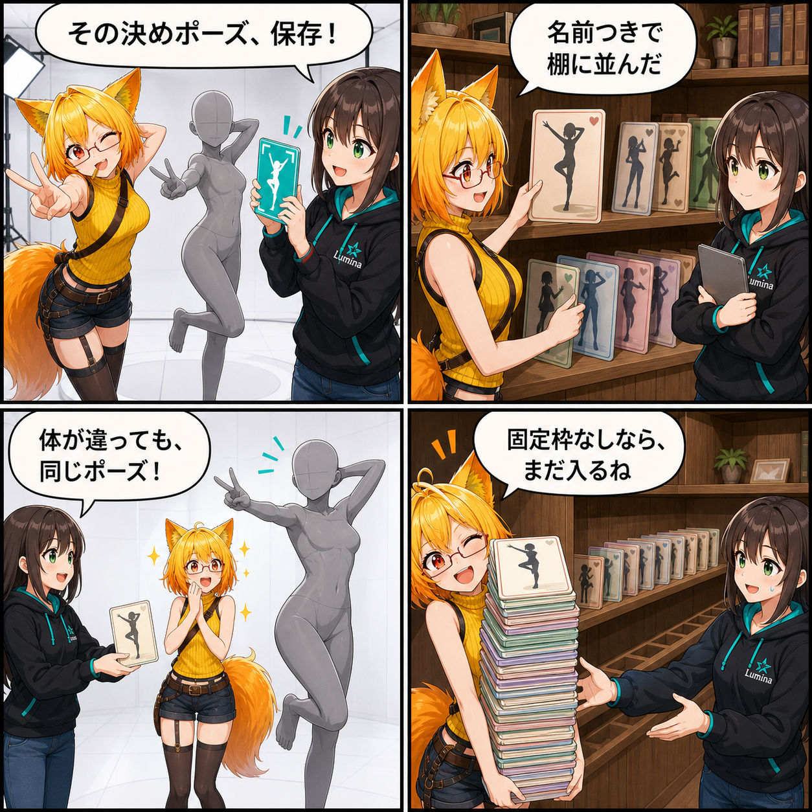

閑話休題：決めポーズを保存して、別のHumanoidでも呼び戻す
その場で作った決めポーズを保存し、DesktopとVRで共有する一覧からあとで呼び戻す。今回は、現行Viewerですでに使えるポーズプリセット機能を紹介します。
main ブランチでは集計期間内のコミットが0件で、前日から有意な開発進展を確認できなかったため、今回は既存機能の紹介回です。紹介内容は集計終了時点の現行実装で確認できた機能に基づきます。終了時点のHEADは 63855cc（Add AI motion category hints）です。現在のViewer作業ツリーには未コミット差分がありますが、実装日を確定できないため本日の実績には含めていません。集計期間は 2026-08-27 03:00:00 JST から 2026-08-28 02:59:59 JST までです。
その場のポーズを、名前付きのプリセットへ
DesktopとVRのポーズ画面から、現在選択しているアバターの姿勢を保存できます。保存先は UserData/Presets/Poses。固定スロット方式ではなく、保存されたJSONファイルを動的に列挙するため、決められた枠へ上書きしていく設計ではありません。
一覧は更新日時の新しいものから並びます。Desktopでは名前と更新日時を見ながら選択・適用でき、VRでは保存件数に応じてページを切り替えて読み込めます。
Humanoidの「骨の意味」で覚える
保存するのは、個別モデル固有のTransform名をそのまま並べたものではありません。操作対象にできるUnity Humanoid骨ごとに、初期姿勢からの回転差分をルート空間で記録します。
読み戻す側でも対応するHumanoid骨へ差分を適用します。そのため、必要なHumanoid骨が対応していれば、体格やモデルの異なるアバターへ同じポーズを移せます。
合わないデータを無理に適用しない
ポーズデータはschema version 4と座標系 VRM-Unity-YUp-ZForward-v1 を確認してから読み込みます。対象アバターが操作ロック中、データ形式や座標系が合わない、対応骨がないといった場合は、無理に不正なTransformを作りません。
保存ファイルも検証を通ったものだけを一覧へ載せます。同じIDが複数の互換保存領域で見つかった場合は重複表示を避け、現在の正式保存先を優先します。
DesktopとVRで同じライブラリを使う
DesktopとVRは、どちらも同じ AvatarPoseLibrary を通じて保存済みポーズを列挙・保存・読込します。Desktop側で作ったプリセットをVR側の一覧から選ぶ、といった使い方も同じ保存領域の上で成立します。
Desktopで保存したポーズは、静止ポーズのモーションカードとしても追加されます。撮影用に作った一瞬の姿勢を保存するだけでなく、再利用できる動きの素材へつなげる導線も用意されています。
技術的なポイント
- 保存先は
UserData/Presets/Poses、固定スロット上限なしで動的に列挙 - DesktopとVRで同じポーズライブラリを共有
- Unity Humanoid骨ごとに、初期姿勢からのルート空間回転差分を保存
- schema versionと座標系を検証し、対応しないデータは適用しない
- 更新日時の新しいプリセットから表示し、互換保存先の重複IDを除外
- Desktop保存時は静止ポーズをモーションカードにも追加
補足
今回の紹介内容は、集計終了時点のコミットツリーにあるポーズ制御、ポーズライブラリ、Desktop／VRのポーズUI、および現行仕様書を突き合わせて確認しました。未コミット差分は機能根拠にも本日の実績にも使用していません。
4コマの裏話
完成した決めポーズから始め、保存カードが棚へ入り、体格の違うHumanoidへ同じ姿勢が渡る様子を「貸し出しカード」のように描きました。最後は固定枠がないと知ったろひが、次々とポーズを増やそうとするオチです。
まとめ
ポーズプリセットは、その場で作ったHumanoidの姿勢を保存し、一覧から選んであとで呼び戻せる機能です。モデル固有の骨名ではなくHumanoid骨と初期姿勢からの回転差分で記録し、DesktopとVRで同じ動的ライブラリを共有します。
本日のひとこと： 決めポーズは、一度きりにしない。